When you first open CurrencyCam, the app will ask for camera permission. Tap "Allow" to enable real-time currency detection. The camera is used only for on-device text recognition — no images are stored or uploaded.
Aim your camera at any price tag, receipt, menu, or sign that shows a currency amount. The app will automatically detect numbers and display the converted result at the bottom of the screen.
Tap the freeze button (top-left corner) to pause the camera feed. This lets you examine detected amounts without the view constantly updating. Tap again to resume live detection.
If you have multiple target currencies set up, use the currency tabs at the bottom of the main screen to quickly switch between them.
Tap the gear icon (⚙) in the top-right corner to open Settings. Here you can configure your source currency, target currencies, and exchange rates.
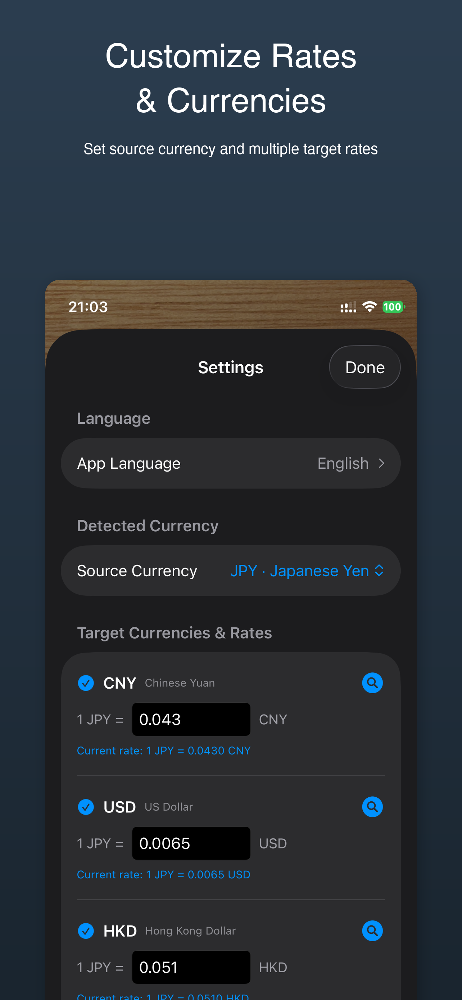
Under "Detected Currency", select the currency you expect to see through the camera. For example, if you're traveling in Japan, set it to JPY.
Tap "Add Target Currency" to choose which currencies you want to convert to. You can add multiple currencies and reorder them by dragging. Swipe left on a currency to remove it.
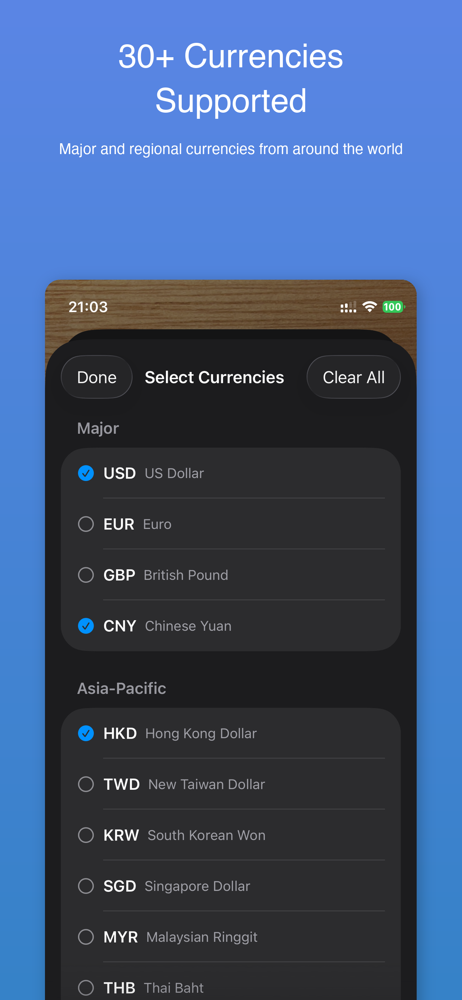
Each target currency has an editable rate field. You can type in your own rate, or tap the magnifying glass icon to look up the current rate online.
Go to Settings > App Language to switch between English, Japanese, Simplified Chinese, Traditional Chinese, and Spanish.
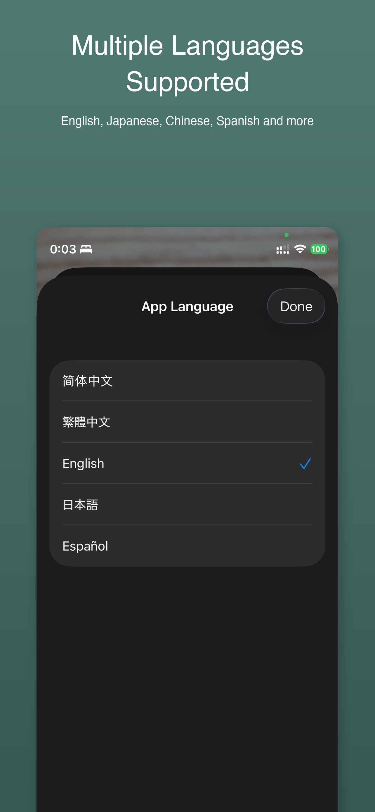
Pro Tip: The app remembers your target currency selections per source currency. So when you switch from JPY to EUR as your source, your target currencies will change accordingly!
為替カメラを初めて開くと、カメラの使用許可を求められます。「許可」をタップして、リアルタイムの通貨検出を有効にしてください。カメラはデバイス上でのテキスト認識にのみ使用され、画像は保存・アップロードされません。
値札、レシート、メニュー、看板など、金額が表示されているものにカメラを向けてください。アプリが自動的に数字を検出し、画面下部に換算結果を表示します。
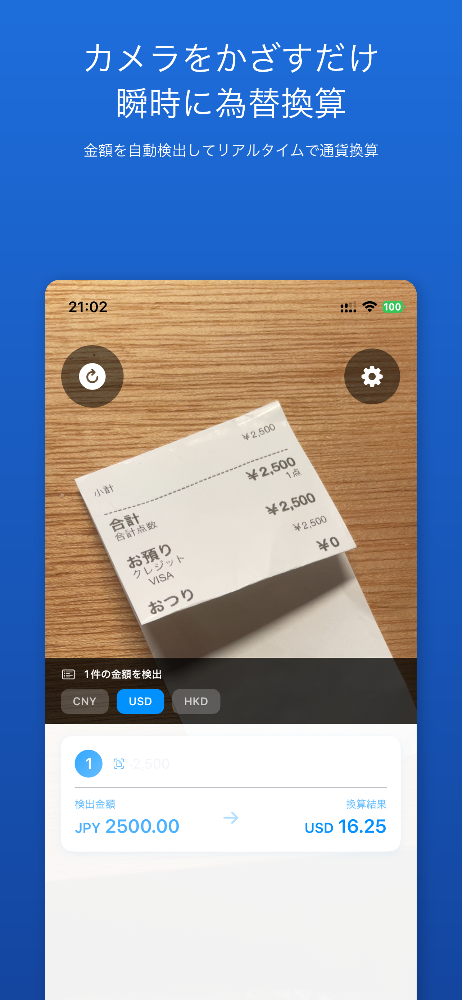
左上のフリーズボタンをタップすると、カメラの映像を一時停止できます。画面が更新されることなく、検出された金額をじっくり確認できます。もう一度タップするとライブ検出が再開されます。
複数の目標通貨が設定されている場合、メイン画面の下部にある通貨タブをタップして素早く切り替えできます。
右上の歯車アイコン（⚙）をタップして設定を開きます。元通貨、目標通貨、為替レートを設定できます。
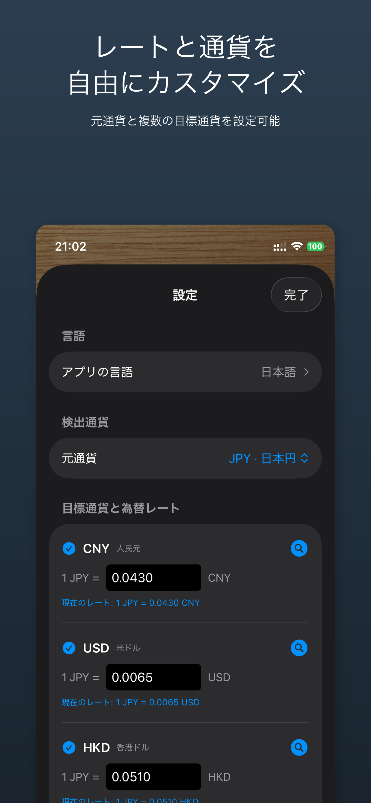
「検出通貨」セクションで、カメラで認識したい通貨を選択します。例えば、日本にいる場合はJPYに設定します。
「目標通貨を追加」をタップして、換算先の通貨を選択します。複数の通貨を追加でき、ドラッグで並べ替えもできます。左にスワイプすると削除できます。
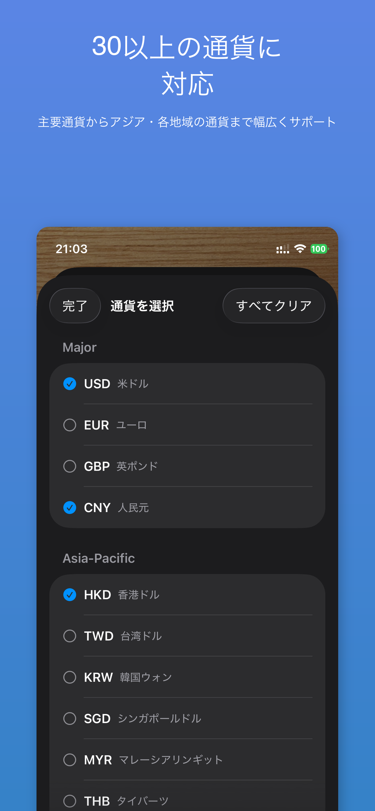
各目標通貨には編集可能なレート入力欄があります。独自のレートを入力するか、虫眼鏡アイコンをタップして最新のレートをオンラインで検索できます。
設定 > アプリの言語から、英語・日本語・簡体中文・繁體中文・スペイン語に切り替えられます。
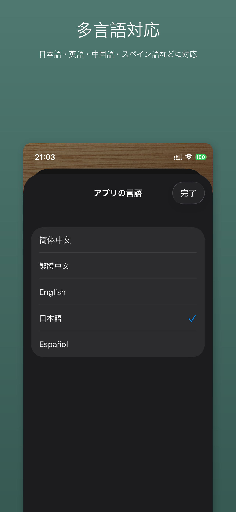
便利な機能：アプリは元通貨ごとに目標通貨の選択を記憶します。例えばJPYからEURに元通貨を切り替えると、それぞれに対応した目標通貨リストが表示されます！
首次打开汇率相机时，应用会请求相机权限。点击"允许"以启用实时货币识别。相机仅用于设备端文字识别，不会存储或上传任何图像。
将相机对准任何价签、收据、菜单或标牌上的金额。应用会自动识别数字并在屏幕底部显示换算结果。
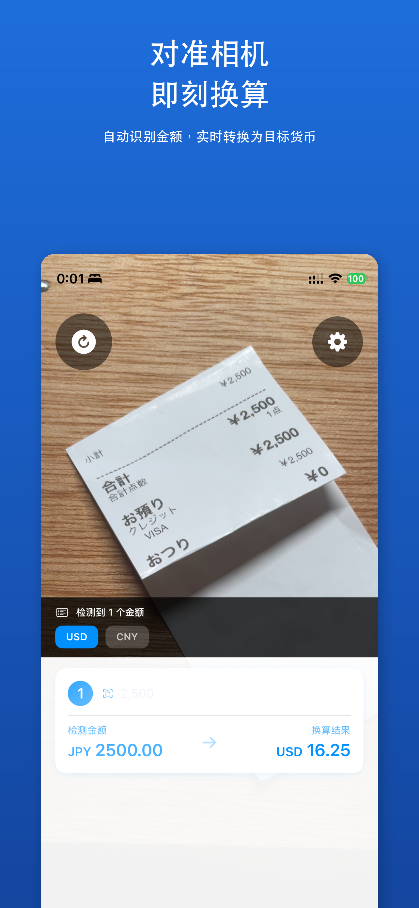
点击左上角的冻结按钮可以暂停相机画面，方便你仔细查看识别到的金额，而不会被不断更新的画面干扰。再次点击可恢复实时检测。
如果你设置了多个目标货币，可以使用主界面底部的货币标签快速切换。
点击右上角的齿轮图标（⚙）打开设置。在这里你可以配置源货币、目标货币和汇率。
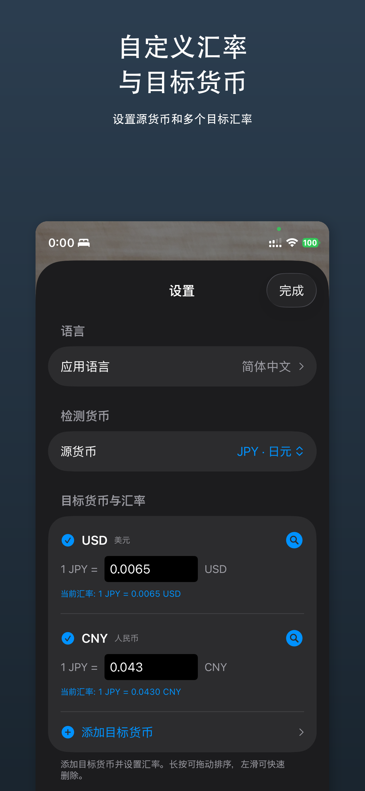
在"检测货币"部分，选择你期望通过相机看到的货币。例如，如果你在日本旅行，设置为 JPY。
点击"添加目标货币"来选择要换算的货币。你可以添加多个货币，通过拖动调整顺序，向左滑动可删除。
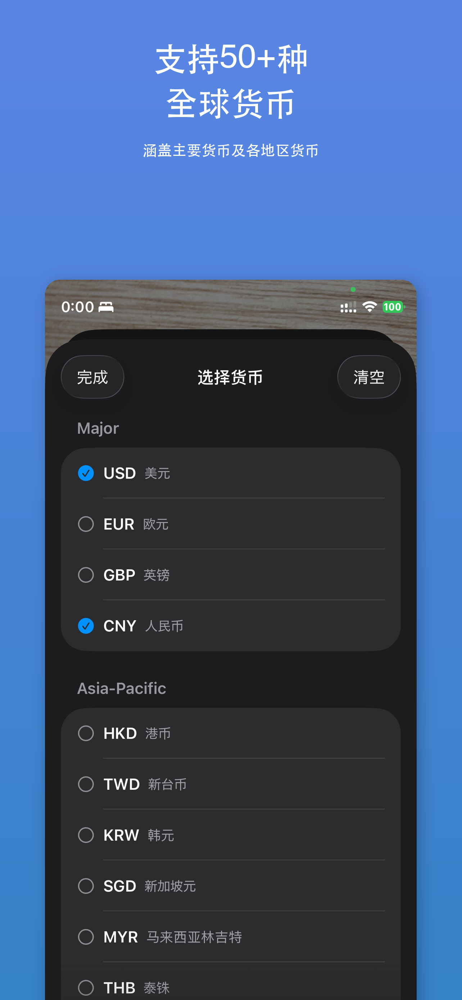
每个目标货币都有可编辑的汇率输入框。你可以输入自己的汇率，也可以点击放大镜图标在线查询最新汇率。
进入设置 > 应用语言，可以在英语、日语、简体中文、繁体中文和西班牙语之间切换。
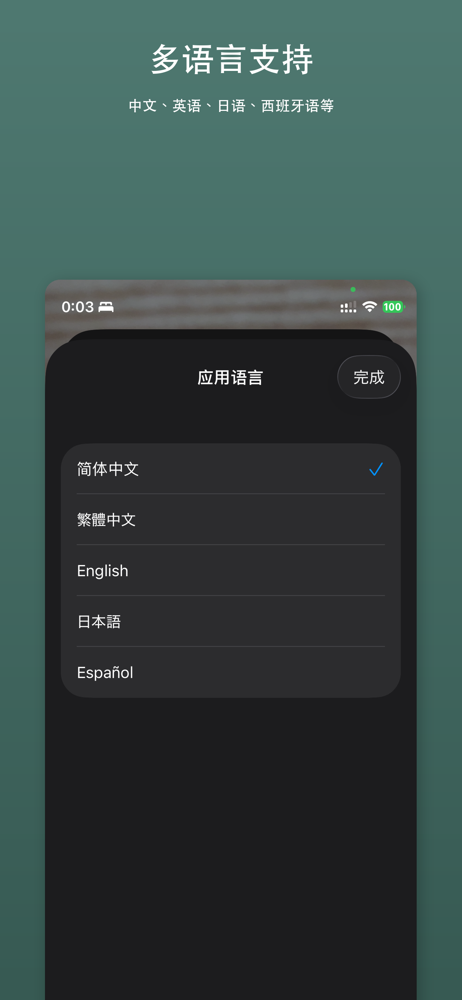
小技巧：应用会按源货币分别记忆你的目标货币选择。当你从 JPY 切换到 EUR 作为源货币时，对应的目标货币列表也会自动切换！
首次開啟匯率相機時，應用程式會請求相機權限。點擊「允許」以啟用即時貨幣辨識。相機僅用於裝置端文字辨識，不會儲存或上傳任何影像。
將相機對準任何價標、收據、菜單或標示上的金額。應用程式會自動辨識數字並在螢幕底部顯示換算結果。
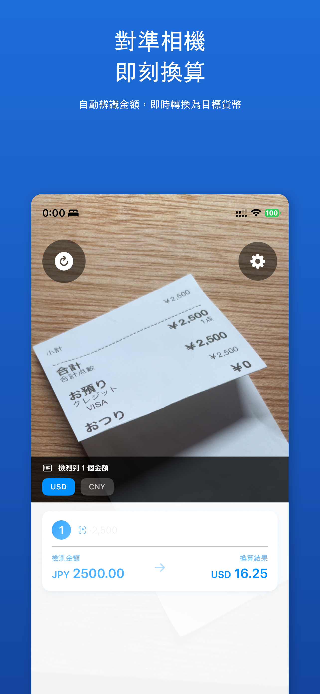
點擊左上角的凍結按鈕可以暫停相機畫面，方便你仔細查看辨識到的金額，而不會被不斷更新的畫面干擾。再次點擊可恢復即時偵測。
如果你設定了多個目標貨幣，可以使用主畫面底部的貨幣標籤快速切換。
點擊右上角的齒輪圖示（⚙）開啟設定。在這裡你可以設定來源貨幣、目標貨幣和匯率。
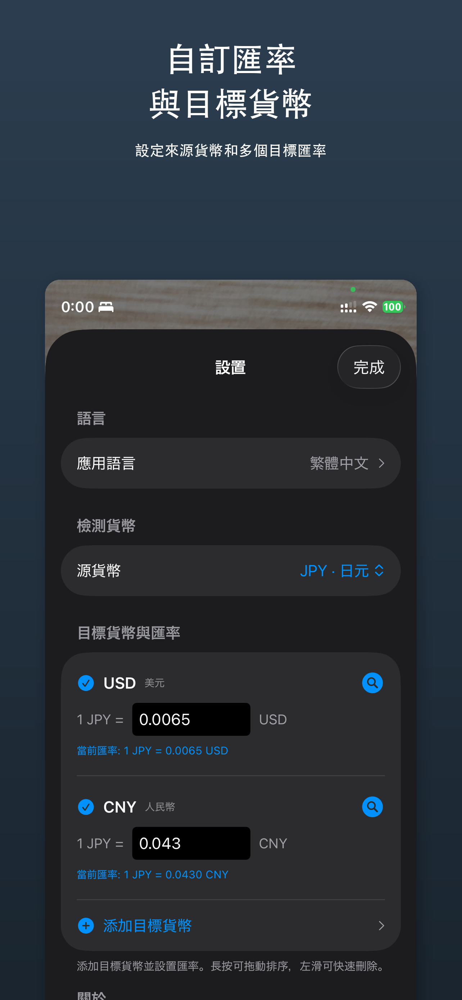
在「偵測貨幣」部分，選擇你期望透過相機看到的貨幣。例如，如果你在日本旅行，設定為 JPY。
點擊「新增目標貨幣」來選擇要換算的貨幣。你可以新增多個貨幣，透過拖曳調整順序，向左滑動可刪除。
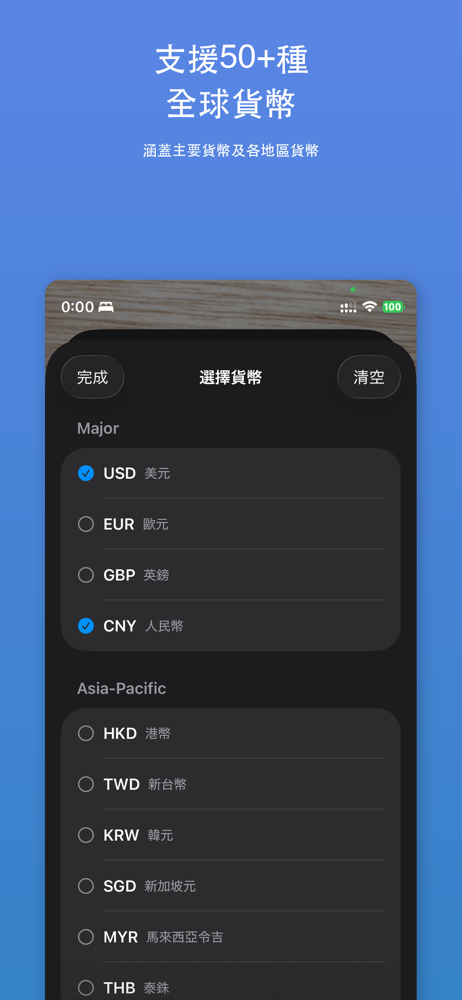
每個目標貨幣都有可編輯的匯率輸入框。你可以輸入自己的匯率，也可以點擊放大鏡圖示線上查詢最新匯率。
進入設定 > 應用程式語言，可以在英語、日語、簡體中文、繁體中文和西班牙語之間切換。
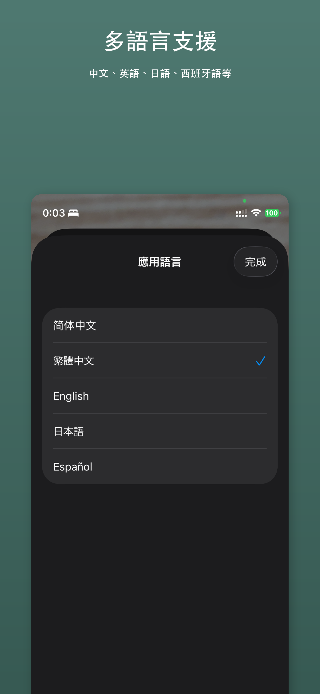
小技巧：應用程式會按來源貨幣分別記憶你的目標貨幣選擇。當你從 JPY 切換到 EUR 作為來源貨幣時，對應的目標貨幣清單也會自動切換！
Al abrir CurrencyCam por primera vez, la app solicitará permiso para usar la cámara. Toca "Permitir" para activar la detección de moneda en tiempo real. La cámara solo se usa para reconocimiento de texto en el dispositivo; no se almacenan ni suben imágenes.
Dirige tu cámara a cualquier etiqueta de precio, recibo, menú o cartel que muestre un monto. La app detectará automáticamente los números y mostrará el resultado de la conversión en la parte inferior de la pantalla.
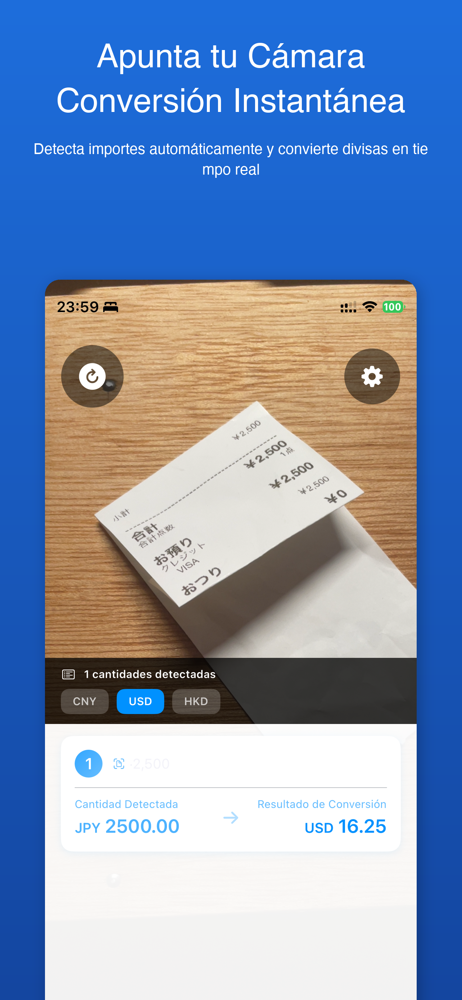
Toca el botón de congelar (esquina superior izquierda) para pausar la vista de la cámara. Esto te permite examinar los montos detectados sin que la vista se actualice constantemente. Toca de nuevo para reanudar la detección en vivo.
Si tienes múltiples monedas de destino configuradas, usa las pestañas de moneda en la parte inferior de la pantalla principal para cambiar rápidamente entre ellas.
Toca el icono de engranaje (⚙) en la esquina superior derecha para abrir Ajustes. Aquí puedes configurar tu moneda de origen, monedas de destino y tasas de cambio.
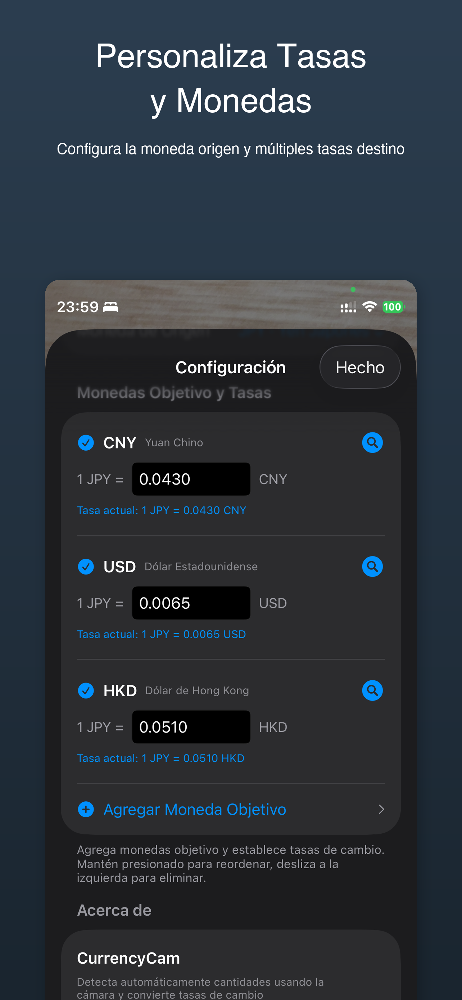
En "Moneda detectada", selecciona la moneda que esperas ver a través de la cámara. Por ejemplo, si estás viajando en Japón, configura JPY.
Toca "Agregar moneda de destino" para elegir a qué monedas quieres convertir. Puedes agregar múltiples monedas y reordenarlas arrastrando. Desliza a la izquierda para eliminar una moneda.
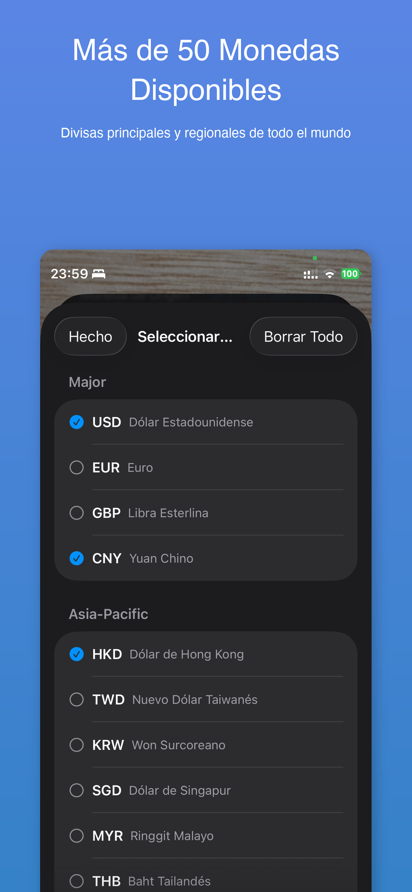
Cada moneda de destino tiene un campo de tasa editable. Puedes escribir tu propia tasa o tocar el icono de lupa para consultar la tasa actual en línea.
Ve a Ajustes > Idioma de la app para cambiar entre inglés, japonés, chino simplificado, chino tradicional y español.
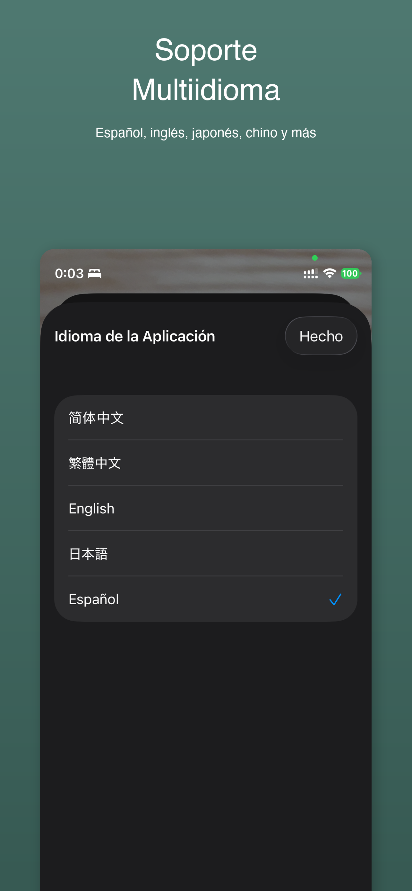
Consejo: La app recuerda tu selección de monedas de destino por cada moneda de origen. Cuando cambias de JPY a EUR como moneda de origen, ¡tu lista de monedas de destino cambia automáticamente!